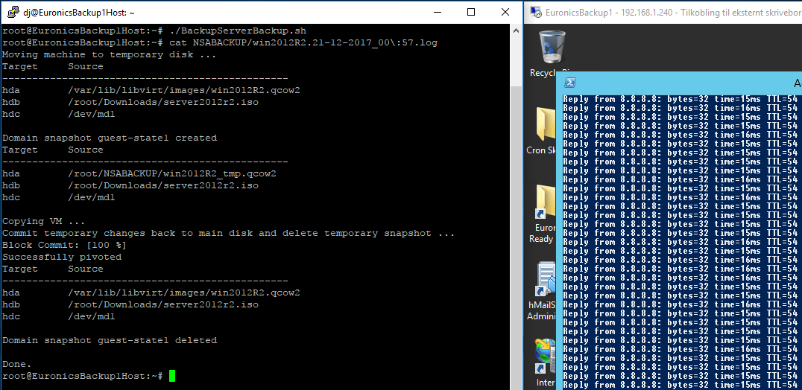

KVM Hypervisor Setup
KVM(Kernel-based Virtual Machine) is a native GNU/Linux type 1 hypervisor.
It requires VT(x)/AMD-V support.
Testing for virtualization support:
# egrep -c '(svm|vmx)' /proc/cpuinfo ^ 0 = no support.
Installing KVM on a clean Debian 9 installation (updated Dec '17):
# apt update; apt upgrade
# apt install qemu-kvm libvirt-clients libvirt-daemon-system
# usermod myuser -a -G libvirt-qemu,libvirt
(GUI) # apt install xorg
# apt install --no-install-recommends openbox
# apt install virt-manager
^ Minimal GUI with manual 'startx' control.
Installing KVM and GUI on a clean Debian 8 installation (deprecated)):
# apt-get update; apt-get upgrade # apt-get install task-lxde-desktop # apt-get install qemu-kvm libvirt-bin bridge-utils virt-manager # usermod myuser -a -G kvm,libvirt NOTE: While it's preferable to run a hypervisor system as clean as possible, it's nice to have local management available. And it's only about 2 GB.
Enable autostart on host boot for a VM (can also be selected in GUI):
# virsh autostart vmName ^ add --disable at the end to turn autostart off again.
List VMs and current state:
# virsh list --all
List snapshots for a VM:
# virsh snapshot-list vmName
Graceful shutdown of a VM:
# virsh shutdown [name|id|uuid]
^ use 'destroy' instead of 'shutdown' to power it off instead.
use 'start' to start it again.
# watch virsh list --all
^ to monitor state.Export VM configuration:
# virsh dumpxml [name|id|uuid] > [filename].xml
Import VM configuration:
# virsh define /path/to/[filename].xml ^ This will define but not start the machine, edit xml first as needed on new host.
Live QCOW2-based VM Backup (requires QEMU 2.1+, libvirt-1.2.9+)
# virsh domblklist vm1
# virsh snapshot-create-as --domain vm1 guest-state1 \
--diskspec vda,file=/whatever/vm1_temp.qcow2 \
--disk-only --atomic
Main disk file is now not currently used, back it up.
Let's export the XML configuration as well to make it complete.
# virsh domblklist vm1 (confirm using temporary disk)
# cp /wherever/vm1.qcow2 /wherever_backup/vm1.qcow2
^ use whatever tool preferred to copy the file.
# virsh blockcommit vm1 vda --active --verbose --pivot
# virsh domblklist vm1 (confirm back to main disk)
# virsh snapshot-delete vm1 --metadata guest-state1
# rm /whatever/vm1_temp.qcow2
# virsh dumpxml vm1 > /wherever_backup/vm1.xml
How an automated script could look (specifically).
Written for, and tested on one of my own guests:
--
#!/bin/bash
# Single VM Live Backup automation.
# Requirements: QEMU 2.1+, libvirt-1.2.9+
vmname="win2012R2"
vm_diskloc="/var/lib/libvirt/images"
backupdir="/media/dj/DAS"
logdir="/media/dj/DAS"
tmpdir="/tmp"
snapshot_exceptions="--diskspec hdb,snapshot=no --diskspec hdc,snapshot=no"
target_diskspec="hda"
logtime=`date '+%d-%m-%Y-%H%M'`
exec 1>${logdir}/${vmname}.${logtime}.log 2>&1
echo "Moving machine to temporary disk ..."
virsh domblklist ${vmname}
virsh snapshot-create-as --domain ${vmname} guest-state1 --diskspec \
${target_diskspec},file=${tmpdir}/${vmname}_tmp.qcow2 --disk-only --atomic \
${snapshot_exceptions}
virsh domblklist ${vmname}
echo "Copying VM ..."
cp ${vm_diskloc}/${vmname}.qcow2 ${backupdir}/${vmname}.${logtime}.qcow2
echo "Commit temporary changes back to main disk and delete temporary snapshot ..."
virsh blockcommit ${vmname} ${target_diskspec} --active --verbose --pivot
virsh domblklist ${vmname}
virsh snapshot-delete ${vmname} --metadata guest-state1
rm ${tmpdir}/${vmname}_tmp.qcow2
virsh dumpxml ${vmname} > ${backupdir}/${vmname}.${logtime}.xml
echo "Cleaning up backups older than 30 days ..."
find ${backupdir}/* -mtime +30 -type f -delete
echo "Done."
No interruption in the live backup:

Converting a VHDX image (or even a physical /dev/disk) to QCOW2:
# qemu-img convert -p -O qcow2 [filename].vhdx /path/to/images/[filename].qcow2
Extending a QCOW2 image:
# qemu-img resize hostname.qcow2 +100GB ^ Shut down the VM first, of course. Extend internally afterwards.
VirtIO Drivers for Windows Guests
Stable Drivers Download Mount the ISO inside the Windows guest. Using device manager - update drivers by pointing to the mounted ISO. Make sure to configure the machine to use Virtio first, if it makes sense.
Running X11 virt-manager from a remote Windows client
# nano /etc/libvirt/libvirtd.conf
^ auth_unix_ro = "none"
auth_unix_rw = "none"
auth_tcp = "sasl"
# service libvirtd restart
Download and install VcXsrv on the Windows client:
https://sourceforge.net/projects/vcxsrv/
Start XLaunch and fire up xterm and start GUI apps from there.
If sudo privileges is needed with anything, use with param -E.A note about VirtIO
VirtIO drivers are paravirtualized drivers that acts as an abstraction layer over devices in KVM guests. Para-virtualization means the guest is partially aware of being a guest, and can send IO requests more efficiently to KVM as a hypervisor by working together with it. Fully virtualized VMs do not know they are being virtualized, causing more work for the hypervisor as it has to "trap" IO requests to hardware. A fully virtualized VM will have an emulation layer close to hardware level in its hypervisor, which is efficient, but highly complicated and less direct than a para-virtualized one.